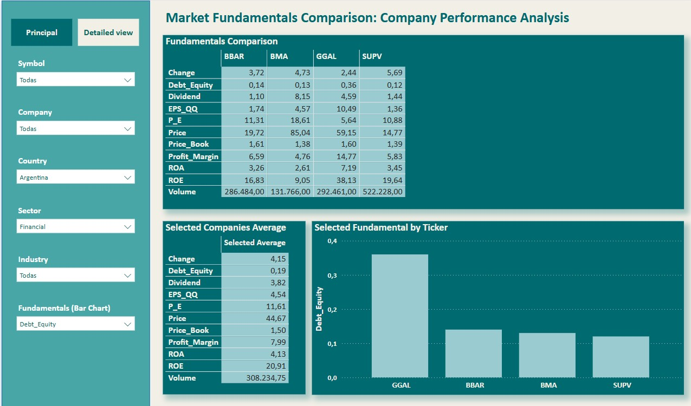
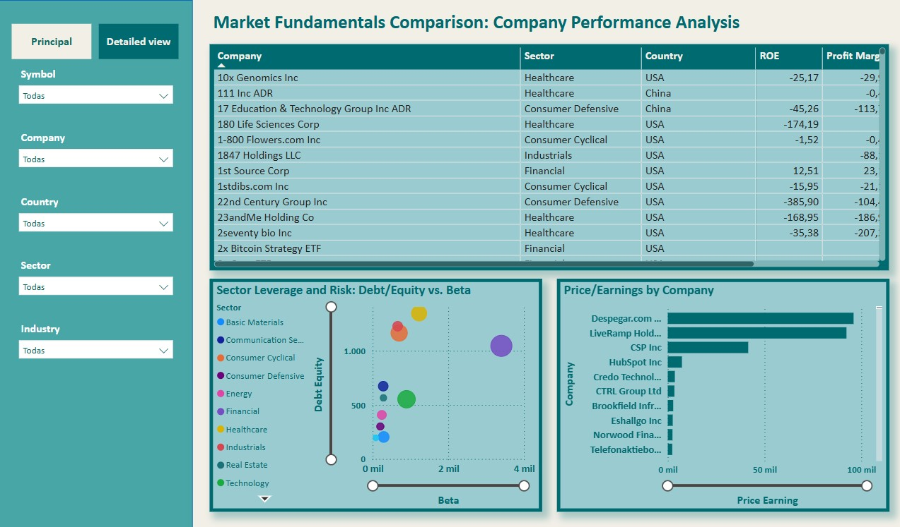

Overview
This Power BI report compares the performance of companies across various sectors, analyzing key financial metrics such as Return on Equity (ROE), profit margins, debt/equity ratios, and price/earnings ratios. It provides strategic insights for investment decisions and competitive analysis.
Key Features
DAX Measures
Here are some key DAX measures used in the dashboard:
SUM(financial_dataset[Beta])SUM(financial_dataset[Debt_Equity])
FundamentalValue =
VAR CurrentTicker = SELECTEDVALUE('financial_dataset'[Simbol])
VAR CurrentFundamental = SELECTEDVALUE(FundamentalNames[Fundamental])
RETURN
IF(
NOT ISBLANK(CurrentTicker), -- Solo calcula para tickers reales
CALCULATE(
SWITCH(
CurrentFundamental,
"Price", [Price],
"P_E", [P_E],
"Price_Book", [Price_Book],
"EPS_QQ", [EPS_QQ],
"Change", [Change],
"Debt_Equity", [Debt_Equity],
"Dividend", [Dividend],
"Profit_Margin", [Profit_Margin],
"ROA", [ROA],
"ROE", [ROE],
"Volume", [Volume],
BLANK()
),
'financial_dataset'[Simbol] = CurrentTicker
),
BLANK()
)
VAR CurrentFundamental = SELECTEDVALUE(FundamentalNames[Fundamental])
RETURN
AVERAGEX(
ALLSELECTED('financial_dataset'[Simbol]),
SWITCH(
CurrentFundamental,
"Price", [Price],
"P_E", [P_E],
"Price_Book", [Price_Book],
"EPS_QQ", [EPS_QQ],
"Change", [Change],
"Debt_Equity", [Debt_Equity],
"Dividend", [Dividend],
"Profit_Margin", [Profit_Margin],
"ROA", [ROA],
"ROE", [ROE],
"Volume", [Volume],
BLANK()
)
)
Tickers = {
("Simbol", NAMEOF('financial_dataset'[Simbol]), 0)
}
Fundamentals = {
("Change", NAMEOF('Metrics'[Change]), 0),
("Debt_Equity", NAMEOF('Metrics'[Debt_Equity]), 1),
("Dividend", NAMEOF('Metrics'[Dividend]), 2),
("EPS_QQ", NAMEOF('Metrics'[EPS_QQ]), 3),
("P_E", NAMEOF('Metrics'[P_E]), 4),
("Price", NAMEOF('Metrics'[Price]), 5),
("Profit_Margin", NAMEOF('Metrics'[Profit_Margin]), 6),
("Price_Book", NAMEOF('Metrics'[Price_Book]), 7),
("ROA", NAMEOF('Metrics'[ROA]), 8),
("ROE", NAMEOF('Metrics'[ROE]), 9),
("Volume", NAMEOF('Metrics'[Volume]), 10)
}
Power Query Transformations
Data was cleaned and transformed using Power Query:
Results and Insights
The dashboard provides actionable insights through dynamic filtering and visualization:
Market Fundamental Analysis: Primary Dashboard

The primary dashboard offers a comprehensive comparison of key market fundamentals across companies, enabling detailed performance analysis by sector, country, and selected metrics.
Dynamic Analysis with Field Parameters
Field Parameters enhance the report's flexibility by allowing users to dynamically switch between different metrics, such as ROE, P/E, or Debt/Equity, in visualizations like the bar chart below. This interactivity enables a tailored analysis, helping stakeholders quickly identify trends and compare company performance across various fundamentals without needing multiple static charts.
Market Performance Analysis
This section of the report provides a detailed view of company fundamentals, focusing on sector leverage, risk, and price-to-earnings ratios, with interactive filtering to explore specific companies and sectors.